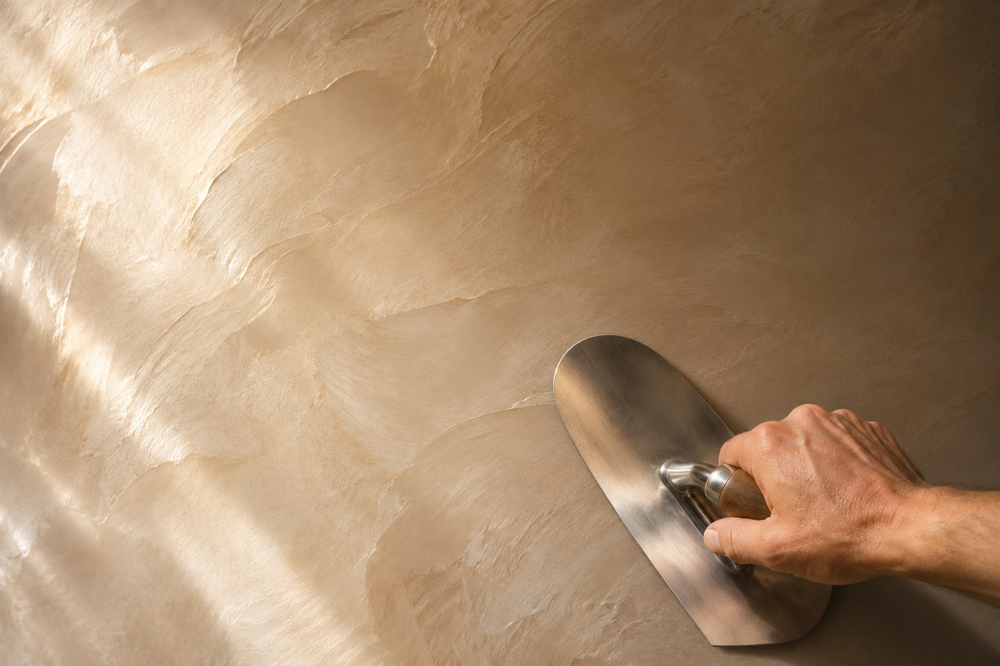

Licht auf Kalk.
Venezianische Kalkspachteltechnik
Musterfläche ansehen
Am Nachmittag fällt das Licht flach auf die Wand. Dann zeigen sich die feinen Spuren der Kelle. Gemeinsam bemustern wir Farbe und Glanz an der Stelle, an der Sie die Fläche später sehen.